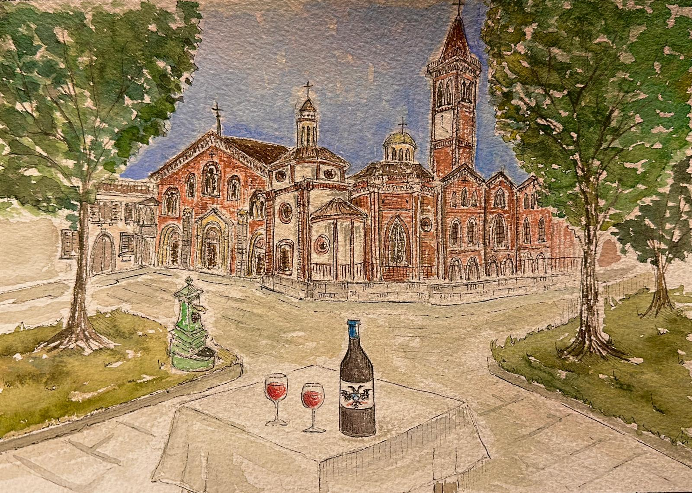
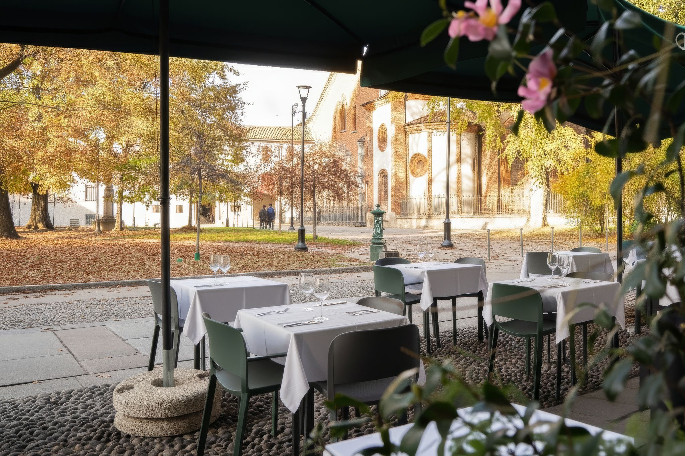
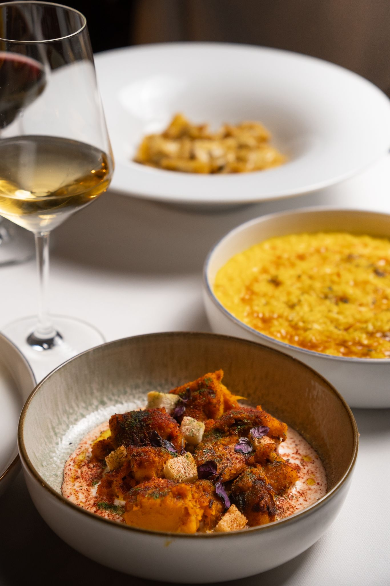
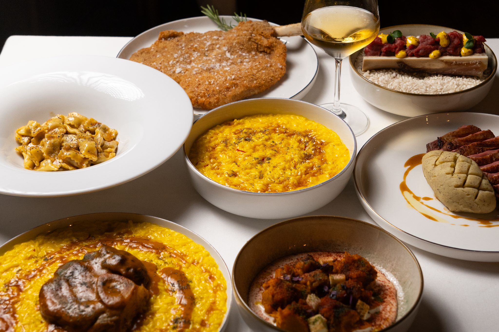

Scorci del locale



Un luogo che profuma di casa, nel cuore della città.
Il Sant'Eustorgio è più di un ristorante: è un rifugio di sapori e convivialità nel centro di Milano. Situato in Piazza Sant'Eustorgio, affacciato sulla storica basilica, offre un ambiente curato ma informale, dove la cucina milanese e piemontese incontra un'atmosfera autentica e senza tempo.


Ogni spazio racconta un modo di vivere la città.
All'interno, il ristorante accoglie 60 coperti divisi in due sale. La prima, più ampia e luminosa, ospita pranzi e cene di gruppo con il calore della tradizione; la seconda, più intima, è pensata per incontri riservati o cene romantiche. I mattoni a vista, le luci morbide e i dettagli in legno creano un equilibrio tra semplicità e raffinatezza, rendendo l'ambiente accogliente in ogni momento della giornata.
Un angolo all'aperto dove il tempo rallenta.
Il dehors del Sant'Eustorgio Milano, con i suoi 50 coperti spaziosi, è il cuore pulsante del locale durante la bella stagione. Affacciato direttamente sulla piazza, regala una prospettiva unica sulla città: l'atmosfera viva di Milano si fonde con la tranquillità di un pranzo o una cena all'aperto. Ideale per un aperitivo estivo, un pranzo di lavoro o una cena tra amici, il dehors mantiene l'eleganza semplice e il servizio attento che da sempre caratterizzano il ristorante.
